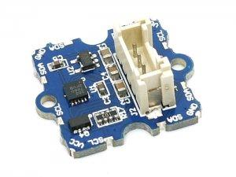
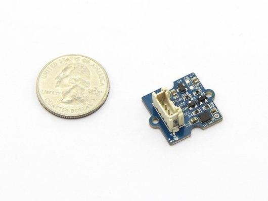
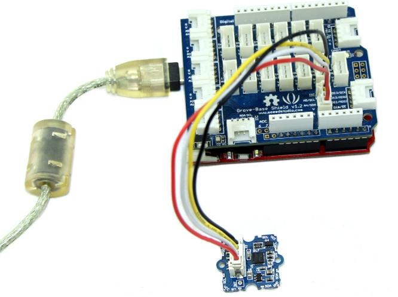
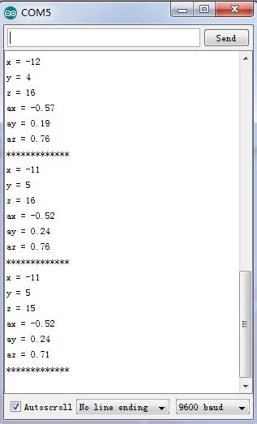
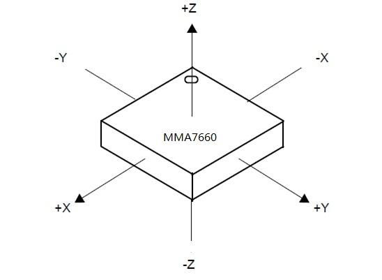
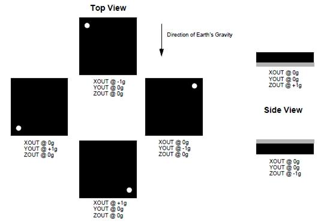

|  |
 |
| Grove - 3-Axis Digital Accelerometer v1.2
|
Grove - 3-Axis Digital Accelerometer v1.2b
|
3-Axis Digital Accelerometer is the key part in projects like orientation detection, gesture detection and Motion detection. This 3-Axis Digital Accelerometer(±1.5g) is based on Freescale's low power consumption module, MMA7660FC. It features up to 10,000g high shock survivability and configurable Samples per Second rate. For generous applications that don't require too large measurement range, this is a great choice because it's durable, energy saving and cost-efficient.
Model:SEN21853P
Note:
More details about Suli-compatible Library, please refer to Suli
Here we are going to show you how to get raw data and data measured by "g" from this sensor.
Connect this module to the I2C port of Grove - Base Shield via a Grove cable.
Note:If you want to activate the Interrupt function of this module, you need to connect the INT soldering pad we broke out on the board with a pin of Arduino that's capable of Interrupt Service Routine.

Install the library we provide in the "Resources" section.
Open the code directly by the path:File -> Example ->DigitalAccelerometer_MMA7660FC ->MMA7660FC_Demo.
In this program, acceleration information are sent from the sensor to Seeeduino via I2C bus and then Seeeduino printed them onto the serial monitor.
Open the serial monitor to check the result.

The outputs of this sensor consist of two parts: raw data and 3-axis acceleration info converted into the unit of gravity, "g".
1.You should have got a raspberry pi and a grovepi or grovepi+.
2.You should have completed configuring the development enviroment, otherwise follow here.
3.Connection
4.Navigate to the demos' directory:
cd yourpath/GrovePi/Software/Python/
nano grove_i2c_accelerometer.py # "Ctrl+x" to exit #
import time
import grovepi
# Connect the Grove Accelerometer (+/- 1.5g) to any I2C port eg. I2C-1
# Can be found at I2C address 0x4c
# SCL,SDA,VCC,GND
while True:
try:
print grovepi.acc_xyz()
time.sleep(.5)
except IOError:
print "Error"
5.Run the demo.
sudo python grove_i2c_accelerometer.py
Below are two figures helping you understand the physical meaning of the result.
The first figure is about the direction of each axis:

The second figure gives some examples:
